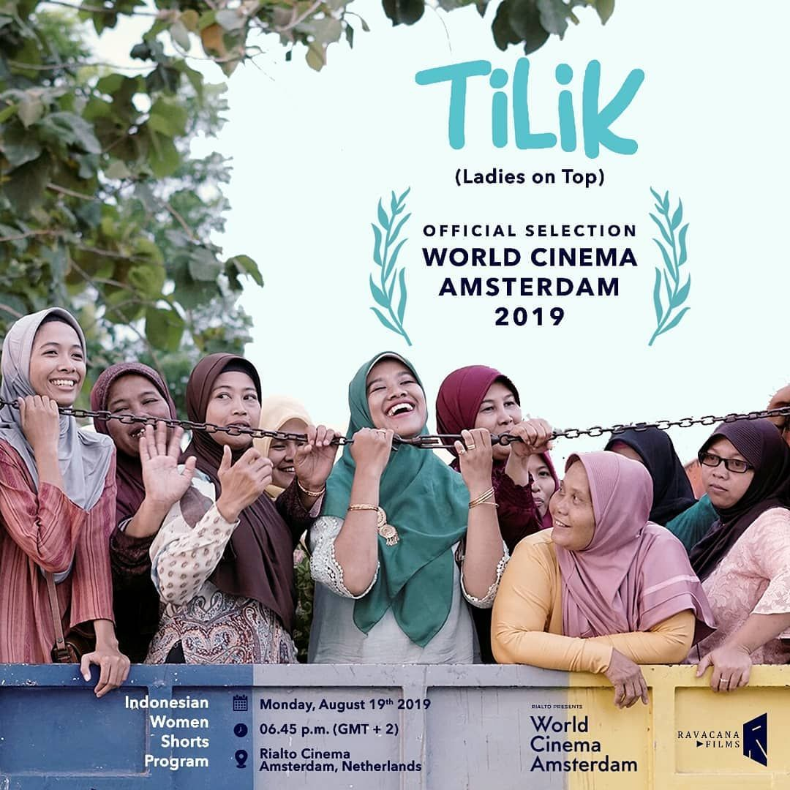

JIM'S CORNERS

Film Tilik dari Ravacana Films viral dan tuai pujian, telah meraih banyak penghargaan.Film Tilik dari Ravacana Films membuktikan bahwa anak-anak bangsa memiliki kualitas yang bagus dalam memproduksi film pendek. Beberapa hari ini, film Tilik yang dirilis tahun 2018 tersebut ramai diperbincangkan di media sosial.
Tilik adalah film karya sutradara Wahyu Agung Prasetyo dan diproduseri Elena Rosmeisara. Film Tilik ini merupakan kerjasama Ravacana Films dengan Dinas Kebudayaan Daerah Istimewa Yogyakarta. Karakter Bu Tejo yang menonjol di film pendek Tilik ini mampu membuat penonton kesal sekaligus terhibur dengan tingkahnya.idak hanya viral di media sosial dan mengantongi banyak pujian, film pendek Tilik ternyata telah menyabet beragam penghargaaan. Film Tilik memenangkan Film Pendek Terpilih di Piala Maya 2018.